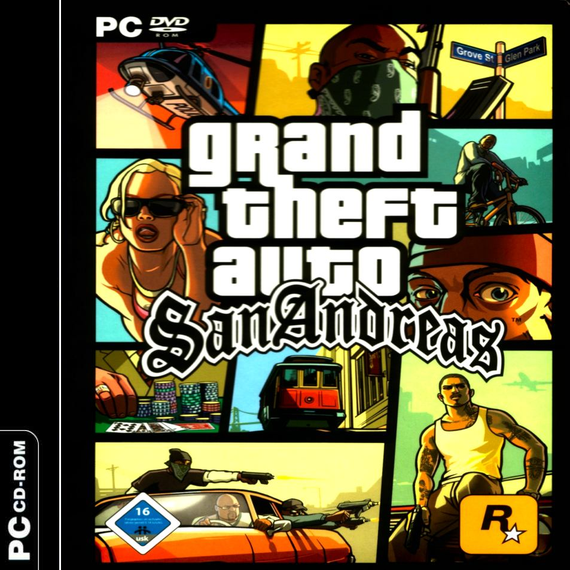

Grand Theft Auto: San Andreas

"Grand Theft Auto: San Andreas is a 2004 open world action-adventure video game developed by Rockstar North in the United Kingdom and published by Rockstar Games. It is the third 3D game in the Grand Theft Auto video game franchise, the fifth original console release and eighth game overall. Originally released for the PlayStation 2 in October 2004,[2] the game has since been released for the Xbox and Microsoft Windows in June 2005, then released on the Xbox Live Marketplace for the Xbox 360 in October 2008, then released on the PlayStation Store via PSN for the PlayStation 3 in December 2012, and has received wide acclaim and high sales figures on all platforms. It is the best-selling game of all time on PlayStation 2. It was made available on Steam on January 4, 2008,[6] and on Intel-based Macs running a minimum of Mac OS X 10.6.6 in September 2011. San Andreas was released for the PlayStation 3 via PlayStation Network in December 2012. Grand Theft Auto: San Andreas was succeeded by Grand Theft Auto: Liberty City Stories and was preceded by Grand Theft Auto: Vice City.
The game is set in the semi-fictional state of San Andreas (based on California and Nevada), which contains three metropolitan cities: Los Santos, based on Los Angeles, San Fierro, based on San Francisco, and Las Venturas, based on Las Vegas. Set in 1992,[7] San Andreas revolves around the gang member Carl "CJ" Johnson returning home from Liberty City to Los Santos, San Andreas, after learning of his mother's murder. CJ finds his old friends and family in disarray. Over the course of the game, CJ gradually unravels the plot behind his mother's murder.
The high-level plot of the game is based on multiple real-life events in Los Angeles including the rivalry between street gangs the Bloods and Crips (which the player's gang and rival gang are spoofed off of), the Crack epidemic (which is shown as a major point of conflict in the game), the LAPD Rampart scandal (forming the basis of several main antagonists in the game), and the game even culminates in a spoof of the 1992 Los Angeles riots."
*From the
Wikipedia page.

 | Monster |  |
The mystery caller's voice can be heard over a loudspeaker. Carl demands to know what info he has about Sweet. First however, he would like to see what you are made of. One of the caller's workers explains your task. Using the monster truck, you must get to each set of co-ordinates (represented by red markers) as quickly as possible. Make it to all of them and then get the truck back to the ranch. Lose the truck, and you fail. The truck has 4 wheel steering instead of a handbreak, so use 'Square' to decellerate.
After the cutscene, get inside the monster truck. As soon as you enter, a timer appears on-screen and you must get a better time than 06.30. The monster truck is tough and sturdy, so you don't have to stick to the roads. Instead, drive over the rocks, grass and desert to your destination. Don't go too quickly, or you risk falling over the edge of a rock/mountain, and it can be difficult to recover. It is very unlikely that the monster truck will topple, but if it does, play around with the left analog stick until you flip back over. The only thing that is likely to disrupt your journey at the jagged rocks that stick out from the ground in the deserty areas, so watch out for those. Go through all 35 markers to complete the mission.
Reward depends on the time you finished: $5000 for 1st, $4000 for 2nd, $3000 for 3rd, $2000 for 4th and $1000 for 5th.
*The mystery character calls again. He tells you to get back to the ranch immediately, so that he can explain everything.
| Hijack | |
Mike Toreno greets Carl, and Carl admits that he screwed him over. Toreno doesn't care, and goes onto explain that he works for a government agency, but it's not important which one. Toreno's involvment with the Loco Syndicate was simply a means of gaining money and making new contacts. He needs you to do things that he cannot be caught doing. Toreno wants you to comandeer a truck - a rival agency with a confused social agenda. They have things that he needs. However, it is a two man job. Toreno suggests using your sister's boyfriend, Cesar. You need to use the bike in order to get Cesar close enough to the truck.
Pickup Cesar and catch up with the truck, which is heading to Foster Valley from Tierra Robada. It is crossing the Garver Bridge. Get on the bike with Cesar and drive up the hill, onto the Kincaid Rail Bridge. Speed across the bridge, drive past the Xoomer garage and go onto the freeway. Pull upto the left hand side of the truck and hold the bike in position until Cesar is ready to jump. You must stay close to the door of the cab. After the jump, get in the truck with Cesar and take it back to the garage in Doherty. Stop in the red marker - Cesar takes the wheel, and Carl guides him into the garage.
» Map
$7000
*Toreno calls. Get to the ranch.
| Interdiction | |
Toreno needs a favour, but Carl wants to know more about his brother. Toreno explains - he's in prison up state, D wing Cell 13. To the left he's got a child killer, who wants to rip his throat out, and to the right of him he's got a white supremacist, who wants to eat his heart! Toreno reveals that Tenpenny and Pulaski killed Officer Pendelbury after he threatened to expose their operation. He assures you that Sweet is fine. He then goes onto explain your task - there is precious cargo that needs collecting.
Grab the BF Injection outside Toreno's ranch, and goto El Castillo del Diablo. Stop in the red marker, and Toreno speaks to you through a loudspeaker. Choose a vehicle (bike or dune buggy), pickup the Rocket Launcher and get to the drop point. Choose the bike, and head upto the top of the mountain. Stop in the red marker, and again, Toreno speaks to you via another loudspeaker. CJ drops the flare and a chopper arrives with the cargo. Toreno says the pilot is having trouble. Suddenly, two agency choppers appear and begin to attack. Protect the contraband helicopter from the spooks. A healthbar appears for the chopper. Shoot down the two choppers as quickly as possible, and more will arrive. Wait until they are fairly close before shooting, to ensure that you don't run out of rockets. The closer you are to the chopper, the more likely you are to hit it. The chances that you'll hit a chopper which is far away, are low. You gain a 2 star wanted level. The chopper leaves the scene and drops the package in the middle of the desert. Go and pick it up. Toreno talks to you through yet another loudspeaker, and tells you to get the package back to Las Brujas. Stop in the red marker in the garage, to complete the mission.
» Map
$1000
| Verdant Meadows | |
"Look at this history", Toreno says. "It's all lies, it says that Hitler killed himself and that we nuked Japan". Anyway, Toreno says he used Sweet as an excuse to get you to jobs for him. They aren't releasing him yet, but they are looking after him. Toreno needs Sweet alive as much as you do - apparently. After that last bit of work, there's a price on your head. Toreno needs you to start doing some real wet work. Goto the abandoned airstrip and buy it. It will cost you $80,000. If you don't have this amount of money, go out and earn it. Once you have purchased the property, go into the office where you will see a red marker. Walk into it, and you'll recieve a phonecall from Toreno. You are going to have to learn to fly. Toreno has set out a series of tests for you. Access these tests via the television in front of you. You must prove that you know how to fly, if you are to continue working towards your brother's freedom. You must obtain a score of 70% or above to pass each test. For each test you pass, your flying skill is upgraded (that is, if you haven't already got 100% flying skill). Walk into the red marker to begin.
| Learning to Fly | |
Here are the requirements for each award:
| AWARD GAINED | SCORE REQUIRED |
| Gold | 100% |
| Silver | 85% - 99% |
| Bronze | 70% - 84% |
| No Award | 0% - 69% |
| COMPARISON: TIMES AND PERCENTAGES |
| Takeoff | 70% = 45 sec | 85% = 37.5 sec | 100% = less than 30 sec |
| Land Plane | 70% = 40 sec | 85% = 32.5 sec | 100% = less than 25 sec |
| Circle Airstrip | 70% = 75 sec | 85% = 67.5 sec | 100% = less than 60 sec |
| Circle Airstrip and Land | 70% = 95 sec | 85% = 87.5 sec | 100% = less than 80 sec |
| Helicopter Takeoff | 70% = 60 sec | 85% = 52.5 sec | 100% = less than 45 sec |
| Land Helicopter | 70% = 45 sec | 85% = 37.5 sec | 100% = less than 30 sec |
| Destroy Targets | 70% = 105 sec | 85% = 92.5 sec | 100% = less than 80 sec |
| Loop the Loop | 70% = 27 sec | 85% = 24 sec | 100% = less than 21 sec |
| Barrel Roll | 70% = 23 sec | 85% = 20.5 sec | 100% = less than 18 sec |
| Parachute onto Target | 70% = 70 sec | 85% = 62.5 sec | 100% = less than 55 sec |
- Takeoff
Press and hold 'X' to accelerate along the runway. Just as the plane's tail begins to rise, pull back on the left analog stick to lift the nose, and take off. As soon as you take off, press R3 to retract the landing gear. [Do not take your finger off the 'X' button. The only thing you need to do is move the left analog stick up or down, do not move it from side to side or you will create problems for yourself. When you move the left analog stick, move it very slowly or you risk losing control of the plane] Fly towards the first corona at a steady speed. Go through it, and slowly adjust the analog stick to point the nose downwards. Fly through the second corona, and again, slowly adjust the left analog stick to point the nose upwards. Fly through the third and final corona to complete the test. Your overall% is based on the time it took to complete. Remember, you only need 70% or above to pass. Press 'X' to continue.
- Land Plane
As soon as you gain control of the plain, press R3 to lower the landing gear. Move steadily downwards and go through the corona. Press and hold 'Square' to decellerate, and do not touch the ground until you are at a very slow speed. Time it so that you land in or near the red marker. If you are slightly off-course, don't scramble or you will gain damage points. Your overall score is based on 3 factors: Your final position score, your damage penalty and the time taken.
- Circle Airstrip
You are given the option of flying clockwise or anti-clockwise. Clockwise would be the more sensible choice. Use the skills you learned in the first test to take off - hold 'X' to accelerate along the runway and pull back on the left analog stick as the tail rises, to take-off. The main thing to remember is that you are flying around in a huge circle. Do not fly in straight lines towards each corona, but instead fly in a large circular movement. If you imagine the route as being a huge circle you shouldn't have to worry about the location of the next corona, as you can "predict" where it is going to be. Your overall score is based on 2 factors - the time taken and your damage penalty, if any.
- Circle Aistrip and Land
Again, select clockwise and repeat the steps in the previous test. This time, however, you must land after flying through the final corona. As you near the final corona, bank left (slightly) and use the skills you learned in test-two to land the plane in the red marker. Your overall score is based on 3 factors - the time taken, your final position score and your damage penalty, if any.
- Helicopter Takeoff
Before doing anything, let the blades spin until they are as fast as they can possibly go. Press and hold 'X' to accelerate upwards. A message will appear on-screen asking you to release 'X', to level off. Rotate the helicopter 180 degrees by holding L2 or R2. Push the left analog stick forward slightly to point the nose down 45 degrees. Follow the yellow blip on the radar. Keep the nose pointed forwards, and vary between the 'Square'and 'X' buttons, so that you maintain a good speed without going too high. Fly through the corona to complete the test. Your overall score is based on 2 factors - the time taken and the damage penalty, if any.
- Land Helciopter
Use the skills you learned in the previous test to fly towards the red marker. Pull the left analog stick back and tap 'Square' repeatedly as you approach, to decellerate. Land in the middle of the red marker. Your overall score is based on the time taken, your final position and your damage penalty.
- Destroy Targets
Use the skills you have learned to fly towards the 3 vans at the end of the airstrip. Don't fly too low, or you will miss the targets completely. Tap 'Square' repeatedly as you approach the targets, and begin firing rockets (using 'Circle). Fire as many as you can, and as quickly as you can, and destroy the 3 vans. Quickly turn 180 degrees (using L2) and fly towards the moving vans. Again, slow down as you approach and begin firing as quickly as you can. Destroy both targets and again, turn 180 degrees, and head back to the airstrip. Land in the red marker. Your overall score is based on the time taken, your final position score and the damage penalty.
- Loop the Loop
Hold 'X' to maintain height and speed. As soon as you pass through the corona, pull back on the left analog stick to perform a loop. Push forward on the left analog stick just before you level off and go through the second corona. Your overall score is based on the time taken and the damage penatly, if any.
- Barrel Roll
Hold 'X' to main height and speed. As soon as you pass through the first corona, push the analog stick left to perform a barrel roll. The nose must be pointed slightly upwards before attempting the barrel roll, otherwise you will heard straight towards the ground. Level off and pass through the second corona. Your overall score is based on the time taken and the damage penalty.
- Parachute onto Target
Let CJ fall for about 10 seconds. Then push the left analog stick forward to accelerate. A message will appear on-screen, telling you to release the parachute. Do so, as soon as this message appears (press 'Circle'). Pull back on the left analog stick to move forward rapidly. Time it so that you land in the middle of the red marker. Your overall score is based on the time taken, and your final position score.
Respect +
*Woozie calls. Go and see him at his new place of work, he has a bussiness proposition for you. He's at the Four-Dragons Casino in Las Venturas.
| N.O.E | |
Toreno catches you by surprise. He's got some guys out in a field that need some equipment. If they don't get it, they'll be dead by nightfall. Toreno can't do it himself because he has 5 people watching him at all times - one DEA, one FBI, a Russian, a Cuban double agent and Toreno's paymasters. You're not ready yet, so you must stay low on the radar. The plane is loaded and ready to go, so get inside. Take off, and raise the landing gear. Toreno tells you to use the canyon as cover, but instead, fly towards the water and stay low. A timer appears on-screen, and you have 10.00 minutes to complete the mission. A visibility bar appears on screen, and the longer you fly above the radar limit, the more it increases. The plane can get pretty fast, which will put you off if you go below the radar limit. Tap 'Square' repeatedly to decellerate, so that you can regain full control of the rustler.
When you reach Angel Pine, fly through the corona to trigger the drop, and make your way back to the airstrip. Lower the landing gear and land the plane, to complete the mission.
» Map
$15000
*Catalina makes another prank call.
| Stowaway | |
Some traitors from another department think they can help the 'overseas situation' by financing militaristic dictators in exchange for arms contracts. They've stolen a consignment of lands mines and plan to offload them in the middle east. One of Toreno's associates has given you the go-ahead to kill them. 'Them', as in government agents. Get on the bike, and the pilot will immediately spot you. The plane stops loading cargo, and attempts an escape (with the cargo-ramp still down). Speed towards the ramp. Ignore the shootists up-ahead, and keep focused on the plane. Some of the cargo falls out of the plane, so drive slightly towards the right, so as to avoid them.
Once you're trapped on board, a barrel is seen sweeping your bike out the back of the plane. Duck into the left, and wait until all of the barrels have rolled out the plane. There are some guards up ahead. Shoot at each of them once, or use your fists - if you shoot too many times, you may shoot the cargo causing the plane to explode. Kill the guard with the parachute, and swipe it. Throw a satchel, and escape the same way you came in. You have 20 seconds before the plane explodes.
$20000

| Black Project | |
You might want to save your game before this mission, as it's without a doubt one of the best in the game. Truth is checking that you're no longer on government business (working with Toreno). He warns you about Toreno, and goes onto explain your task. There's a place not even on the map where the 'Black Project' is being developed. Truth wants you to break in and collect it. Truth takes you to the Area 69 compound, via the mothership. You must gain entry to the research labs before sunrise (05.30).
There are searchlights sweeping the area. Observe their routine and plan your route around them. If you stay in a searchlight's beam for too long or shoot too many out you will be spotted and the control tower will lock down the facility. This will force you to find an alternative route in. There are also several military personnel patrolling the area. Use the thermal goggles that The Truth gave you to help you see them in the dark. You can use stealth to avoid patrols or climb to the top of a control tower and use your sniper rifle to take them out. When goggles are selected, press to toggle thermal vision on and off.
By the time you reach the control tower, you'll be spotted one way or another and the searchlights will change to tracking mode. Chances are the blast doors will have shut by the time you get there, so goto the vent (yellow blip on the radar) and shoot it. Drop down into the vent, and make your way towards the Area 69 interior. There's also a health pickup in the vent, if you need one.
Make your way through Area 69 to the research lab which will give you access to the black project. There are several military personnel on patrol throughout the installation. The control room will allow you to deactivate some of Area 69's exterior defenses, which will aid your escape. The guards are represented by the red blips on the radar. The blips point in the direction that the guards are facing. Use this information to observe their route, and kill them. When you enter the research lab, head in a north easterly direction for aslong as possible, and then turn left. Follow the path and continue moving towards the 'Black Project'. Pickup the ID card and walk into the red marker, to gain access to the launch bay, where the Black Project is being stored. There are guards everywhere as you move down the stairs. Leave no survivors. At the very bottom of launch bay, lies the Black Project - a $60,000,000 project - yes, a jetpack! Walk into the jetpack. Keep your finger on 'X' to accelerate. More guards will shoot as you exit the compound. Use the left analog stick to move forward, and get the jetpack back to Truth.
*After the mission, Truth calls. You've got a date with destiny, apparently. Go and see him.
Note: There are several ways to explore Area 69
after completing this mission. Get the jetpack and goto the Vinewood mansion (the one that is available for purchase). Go round the back, to the swimming pool, and find the weak section on the wall. Walk into it whilst using the jetpack, and let yourself sink for a moment or two. You'll now appear "under" the city. Use your pause-menu map as a guide and fly to Area 69 with the jetpack. You will gain a 5 star wanted level when you get there. Go under the interior with the jetpack and fall for about 60 seconds (take your hands off the controller completely). You are automatically taken into the Area 69 interior, and you are free to explore it. To get rid of the cops, enter the 'Never wanted' cheat:


| Green Goo | |
Truth wants you to take the jetpack, land on a train, kill the guards and take whatever they least want you to get. He can't fly the jetpack at all, so you'll have to do it. Take the jetpack and fly towards prickle pine, where the train is located. You cannot take off the jetpack until the mission is complete. The guards will shoot as you approach the train. You can shoot from above whilst using jetpack - press R1 to aim and 'Circle' to shoot. You can also steady yourself by holding L2 and R2 at the same time. Land on the back of the train, and kill any guards that get in your way.
There are 3 crates on the train, and one of them contains the 'green goo'. Make your way to the first crate and shoot it to smash it open. The crate is empty. Continue moving towards the front of the train, again, killing any guards that attack. Shoot the second crate, which again has nothing in it. The third crate contains the 'green goo' that Truth wants. Collect the jar of green goo and take it back to Truth, at the abandoned airstrip. Truth doesn't explain it's purpose, but he seems to know what it is. He takes the jar of green goo and leaves via the mothership.
$20000
» Continue to Las Venturas Missions